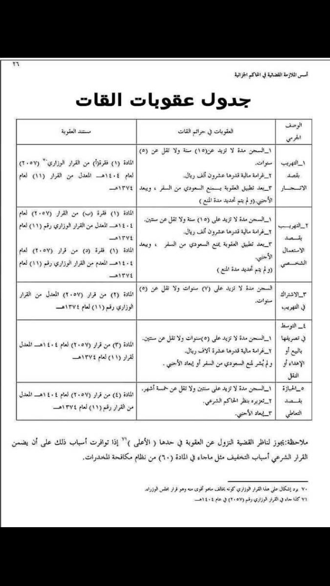
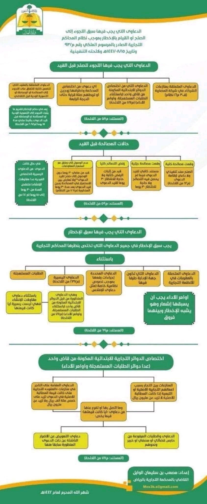
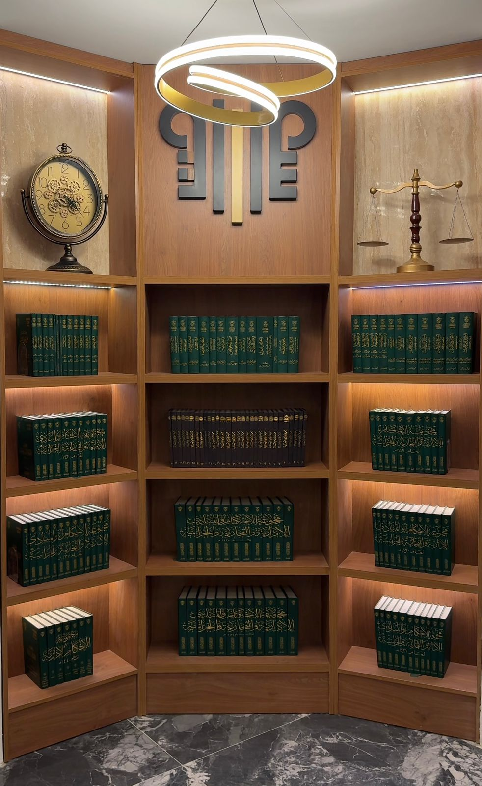

مكتبتك القانونية في مكان واحد — مقالات، سوابق وأحكام قضائية، تعاميم وقرارات

تُعد هذه الورقة العلمية (المنشورة في مجلة قضاء، العدد 38) دراسة تأصيلية وتحليلية للمادة الأولى من "نظام المعاملات المدنية"، وهو النظام الذي أحدث نقلة نوعية في البيئة التشريعية السعودية…

يُمثل هذا الإطار المرجعية التنظيمية والرقابية العليا التي أصدرها البنك المركزي السعودي لضمان التزام المصارف والبنوك المحلية بأحكام الشريعة الإسلامية في كافة تعاملاتها ومنتجاتها. يهدف الإطار…

يستعرض هذا الدليل الأحكام الواردة في "نظام مزاولة المهن الصحية"، موضحاً الخط الفاصل بين الخطأ الطبي المقدر وبين الممارسة المهنية السليمة. يهدف الملف إلى رفع الوعي القانوني لكل من الممارس…

تُعد هذه الوثيقة مرجعاً زمنياً حاسماً للمتقاضين والقانونيين، حيث تستعرض المدد النظامية التي حددها "نظام المعاملات المدنية" الجديد لسقوط الحق في المطالبة القضائية (ما يعرف ب "عدم سماع…

يُعد هذا الكتاب دليلاً إجرائياً متكاملاً صُمم ليكون خارطة طريق للقضاة، المحامين، والورثة، في التعامل مع ملفات التركات المعقدة، خاصة تلك التي تتضمن حصصاً أو أسهماً في شركات قائمة. يتميز…

تعد هذه الوثيقة دليلاً مرجعياً مكثفاً يستعرض مجموعة من "المبادئ القضائية" التي أقرتها الهيئة العامة للمحكمة العليا. تمثل هذه المبادئ القول الفصل في المسائل التي ثار فيها خلاف في التفسير،…

تُعد هذه الوثيقة مرجعاً زمنياً حاسماً للمتقاضين والقانونيين، حيث تستعرض المدد النظامية التي حددها "نظام المعاملات المدنية" الجديد لسقوط الحق في المطالبة القضائية (ما يعرف ب "عدم سماع…

تعد هذه المدونة إصداراً مهنياً متخصصاً يهدف إلى رصد وتحليل "القواعد" التي استقرت عليها الدوائر القضائية في المحاكم التجارية السعودية. يركز الكتاب على الجانب التطبيقي للأحكام، مما يساعد…
يُعد هذا الكتاب مرجعاً قضائياً متخصصاً يستهدف رصد المبادئ والمواقف التي اتخذتها المحاكم التجارية السعودية تجاه النزاعات الناشئة بين الشركاء في الشركات التجارية. يتميز هذا الإصدار بأنه لا…
يُعد هذا المرجع إصداراً علمياً ومنهجياً متميزاً، حيث قام الباحث باستقراء واستخلاص المبادئ والقواعد القانونية من مجموعة الأحكام الإدارية الصادرة عن ديوان المظالم للأعوام (1434ه - 1435ه -…
تعد هذه الدراسة مرجعاً استثنائياً، كونها تستمد قوتها من "المبادئ" التي أقرتها المحكمة العليا في المملكة العربية السعودية. تتجاوز هذه المبادئ كونها مجرد أحكام عادية، لتصبح قواعد ملزمة تسير…
يُمثل هذا الكتاب مدونة قضائية متخصصة تجمع قرارات "مجلس القضاء الأعلى بهيئته الدائمة" وقرارات "المحكمة العليا" ومحاكم التمييز. يهدف الكتاب إلى تأصيل الحجية القانونية للصكوك العقارية وفصل…
تُعد هذه الوثيقة جردًا تفصيليًا وشاملًا لكافة "المواقيت القانونية" التي نص عليها نظام المعاملات المدنية (الصادر عام 1444ه). يتميز هذا الدليل بقدرته على تحويل مواد النظام الطويلة إلى جدول…
يُعد هذا الكتاب أحد المراجع الكلاسيكية النادرة التي عقدت مقارنة قانونية وفقهية رصينة بين "القانون المدني الفرنسي" (كأصل لمعظم القوانين المدنية العربية) وبين "مذهب الإمام مالك" (الذي يُعد…
يُعد هذا الدليل مرجعاً متخصصاً في شرح الأحكام الواردة في نظام المعاملات المدنية (الصادر عام 1444ه) والمتعلقة باختلال ركن أو شرط من شروط صحة العقود. يهدف الملف إلى تبيان الحدود الفاصلة بين…
تعد هذه الوثيقة دليلاً مرجعياً مكثفاً يستعرض مجموعة من "المبادئ القضائية" التي أقرتها الهيئة العامة للمحكمة العليا. تمثل هذه المبادئ القول الفصل في المسائل التي ثار فيها خلاف في التفسير،…
يُعد هذا الكتاب دليلاً عملياً يستخلص "الزبدة" من الأحكام القضائية الصادرة عن المحاكم التجارية السعودية لعامي 1443ه و1444ه. لا يكتفي المؤلف بسرد الأحكام، بل يستخرج منها "القاعدة" أو…
تعد هذه الدراسة مرجعاً قضائياً وعلمياً دقيقاً، حيث تركز على الحالات التي تخرج فيها الشركة عن مبدأ "الشخصية الاعتبارية المستقلة" لتصل المسؤولية إلى الذمة المالية الشخصية للشركاء أو المديرين.…
يُعد هذا الملف مرجعاً قضائياً وإجرائياً عالي الأهمية، حيث يستعرض الاختصاصات النوعية للمحكمة التجارية والأحكام والقرارات التي تصدرها بناءً على نظام الإفلاس ولائحته التنفيذية. يهدف الملخص إلى…
تعد هذه الوثيقة دليلاً مرجعياً مكثفاً يستعرض مجموعة من "المبادئ القضائية" التي أقرتها الهيئة العامة للمحكمة العليا. تمثل هذه المبادئ القول الفصل في المسائل التي ثار فيها خلاف في التفسير،…

لم يعد عالم الإجرام مقتصرًا على الشوارع والأزقة، بل انتقل جزء كبير منه إلى الفضاء السيبراني. مع تزايد الاعتماد على المعاملات الرقمية، استحدثت الدول تشريعات صارمة لمواجهة "الجرائم…

في ظل تسارع حركة التجارة العالمية، أصبحت الحاجة إلى وسيلة سريعة، سرية، ومتخصصة لفض النزاعات أمراً حتمياً. هنا برز التحكيم التجاري (

يعتبر الاستثمار في العقار "الابن البار" كما يُقال، ولكن هذا الابن قد يصبح عبئاً قانونياً ثقيلاً إذا لم يتم التعامل معه وفق أطر تشريعية دقيقة. مع تطور الأنظمة العقارية الحديثة، أصبح الإلمام…

في عالم الأعمال المتسارع، يركز رواد الأعمال غالباً على تطوير المنتج، التسويق، وجذب الاستثمارات، بينما يسقط الجانب القانوني من حساباتهم كأولوية "مؤجلة". ومع ذلك، تشير الدراسات إلى أن نسبة…